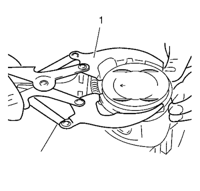
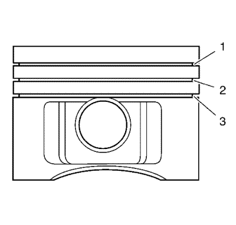
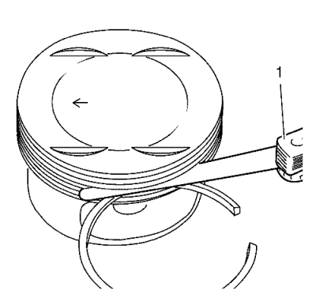

- Desmonte el pistón con la biela. Consultar Desmontaje de pistón, biela y cojinete .

Nota: Indicación, posición de instalación del pistón respecto a la biela.
- Desacople el pistón de la biela.
| • | Desmonte el anillo de seguridad (1) del ojo del pistón. |
| • | Expulse el bulón del pistón. |

- Desmonte los segmentos del pistón con unos alicates para segmentos (1).
Desmonte la carbonilla de aceite de la ranura con un segmento dividido, afilado en forma de cuña.

- Mida la separación entre cortes del segmento.
| • | Ajuste el segmento en el cilindro y mida la separación con una galga de espesores. |
| • | Separación permitida entre cortes: |
| - | Segmento de compresión rectangular (1): 0,20-0,40 mm (0,007-0,015 pulg.) |
| - | Segmento de compresión biselado (2): 0,40-0,60 mm (0,015-0,023 pulg.) |
| - | Segmento rascador de aceite (3): 0,25-0,75 mm (0,009-0,029 pulg.) |

- Compruebe el juego vertical del segmento con una galga de espesores (1) en la ranura del segmento.
Juego vertical permitido:
| • | Segmento de compresión rectangular (1): 0,04-0,08 mm (0,001-0,003 pulg.) |
| • | Segmento de compresión biselado (2): 0,03-0,07 mm (0,001-0,002 pulg.) |
| • | Segmento rascador de aceite (3): 0,03-0,13 mm (0,001-0,005 pulg.) |